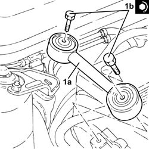

1. Place the power unit reaction rod (1a) back in its housing and
fix it tightening the bolts (1b) to the recommended torque.
Fastening
Component
Ø
Value
(daNm)
1b
Bolt
REACTION ROD
M10
4.5 ÷ 5.5

Topics linked from this page (2)
1016A10 sound-proofing cover - r + rrepair procedure (removal / refitting; the operation number is the code) · engines: 1.9 JTD 8v , 1.9 JTD 16v, 2.4 JTD 10v, 2.4 JTD 20v; all production periods
1004B10 power unit with manual gearbox - r + rrepair procedure (removal / refitting; the operation number is the code) · engines: 2.0 JTS, 1.9 JTD 16v, 2.0 JTS, 2.4 JTD 20v; all production periods
1008C14 engine link bracket - r rrepair procedure (removal / refitting; the operation number is the code) · engines: 2.5 V6, 3.2 V6, 1.9 JTD 8v , 1.9 JTD 16v, 2.4 JTD 10v, 2.4 JTD 20v; all production periods
1008C16 body link bracket - r rrepair procedure (removal / refitting; the operation number is the code) · engines: 1.6 TS , 1.8 TS, 2.0 JTS, 2.5 V6, 3.2 V6, 1.9 JTD 8v , 1.9 JTD 16v, 2.0 JTS, 2.4 JTD 10v, 2.4 JTD 20v; all production periods
1008C18 link mount on engine - r rrepair procedure (removal / refitting; the operation number is the code) · engines: 1.6 TS , 1.8 TS; all production periods
1008C19 engine link mount - r rrepair procedure (removal / refitting; the operation number is the code) · all engines; all production periods
1016C10 cylinder head - r + r and replace gasketrepair procedure (removal / refitting; the operation number is the code) · engines: 1.6 TS , 1.8 TS, 2.0 JTS, 1.9 JTD 8v , 1.9 JTD 16v, 2.0 JTS, 2.4 JTD 10v, 2.4 JTD 20v; all production periods
1020D18 front crank shaft cover oil seal - replacerepair procedure (removal / refitting; the operation number is the code) · engines: 1.6 TS , 1.8 TS, 2.0 JTS, 2.5 V6, 3.2 V6, 1.9 JTD 8v , 1.9 JTD 16v, 2.0 JTS, 2.4 JTD 10v; all production periods
1020D26 flywheel side oil seal cover - r+rrepair procedure (removal / refitting; the operation number is the code) · engines: 1.9 JTD 8v , 1.9 JTD 16v, 2.4 JTD 10v, 2.4 JTD 20v; all production periods
1020D38 flywheel side oil seal - replacerepair procedure (removal / refitting; the operation number is the code) · engines: 1.6 TS , 1.8 TS, 2.0 JTS, 2.5 V6, 3.2 V6, 1.9 JTD 8v , 2.0 JTS, 2.4 JTD 10v; all production periods
1024B10 engine flywheel - r + r for versions with manual gearboxrepair procedure (removal / refitting; the operation number is the code) · engines: 1.6 TS , 1.8 TS, 2.0 JTS, 2.5 V6, 3.2 V6, 1.9 JTD 8v , 1.9 JTD 16v, 2.0 JTS, 2.4 JTD 10v, 2.4 JTD 20v; all production periods
1028H10 connecting rod and piston set - r rrepair procedure (removal / refitting; the operation number is the code) · engines: 1.6 TS , 1.8 TS, 2.0 JTS, 1.9 JTD 8v , 1.9 JTD 16v, 2.0 JTS, 2.4 JTD 10v, 2.4 JTD 20v; all production periods
1028H20 piston with connecting rod - r rrepair procedure (removal / refitting; the operation number is the code) · engines: 1.6 TS , 1.8 TS, 2.0 JTS, 1.9 JTD 8v , 1.9 JTD 16v, 2.0 JTS, 2.4 JTD 10v, 2.4 JTD 20v; all production periods
1028H21 piston with connecting rod - r rrepair procedure (removal / refitting; the operation number is the code) · engines: 1.9 JTD 8v , 2.4 JTD 10v; all production periods
1032B46 toothed drive pulley - r + rrepair procedure (removal / refitting; the operation number is the code) · engines: 1.6 TS , 2.0 JTS, 1.9 JTD 8v , 1.9 JTD 16v, 2.0 JTS, 2.4 JTD 20v; all production periods
1032B52 toothed driven pulley (one) - r + rrepair procedure (removal / refitting; the operation number is the code) · engines: 1.6 TS , 1.8 TS, 2.0 JTS, 1.9 JTD 16v, 2.0 JTS, 2.4 JTD 20v; all production periods
1032B60 bolt pulley - r rrepair procedure (removal / refitting; the operation number is the code) · engines: 1.9 JTD 8v , 2.4 JTD 20v; all production periods
1032B62 a/c duct pulley - r rrepair procedure (removal / refitting; the operation number is the code) · engines: 1.9 JTD 8v , 2.4 JTD 10v; all production periods
1032C31 fixed timing tensioner - r rrepair procedure (removal / refitting; the operation number is the code) · engines: 1.9 JTD 8v , 2.4 JTD 10v; all production periods
1032C32 fixed timing system tensioner (one) r + rrepair procedure (removal / refitting; the operation number is the code) · engines: 1.6 TS , 1.8 TS, 2.0 JTS, 2.5 V6, 3.2 V6, 1.9 JTD 16v, 2.0 JTS, 2.4 JTD 20v; all production periods
1032D12 timing system protective cover(s) - r + rrepair procedure (removal / refitting; the operation number is the code) · engines: 1.6 TS , 1.8 TS, 2.0 JTS, 2.5 V6, 3.2 V6, 1.9 JTD 8v , 1.9 JTD 16v, 2.0 JTS, 2.4 JTD 10v, 2.4 JTD 20v; all production periods
1036B10 overhead camshaft - r r on vehiclerepair procedure (removal / refitting; the operation number is the code) · engines: 1.9 JTD 8v , 2.4 JTD 10v; all production periods
1036H57 hydraulic tappets all r rrepair procedure (removal / refitting; the operation number is the code) · engines: 2.4 JTD 20v; all production periods
1036L20 camshaft idler gears - replacerepair procedure (removal / refitting; the operation number is the code) · engines: 2.4 JTD 20v; all production periods
1040B32 front fuel delivery line - r rrepair procedure (removal / refitting; the operation number is the code) · engines: 1.6 TS , 1.8 TS, 2.5 V6, 3.2 V6, 1.9 JTD 8v , 1.9 JTD 16v, 2.4 JTD 10v, 2.4 JTD 20v; all production periods
1056B90 system cable bundle - r + rrepair procedure (removal / refitting; the operation number is the code) · engines: 1.6 TS , 1.8 TS, 2.5 V6, 3.2 V6; all production periods
1060E10 pressure pump - r rrepair procedure (removal / refitting; the operation number is the code) · engines: 1.9 JTD 8v , 1.9 JTD 16v, 2.4 JTD 10v, 2.4 JTD 20v; all production periods
1060E30 pressure pump pulley - r rrepair procedure (removal / refitting; the operation number is the code) · engines: 1.9 JTD 8v , 1.9 JTD 16v, 2.4 JTD 10v, 2.4 JTD 20v; all production periods
1060E40 supplementary pressure pump - r rrepair procedure (removal / refitting; the operation number is the code) · engines: 1.9 JTD 8v , 1.9 JTD 16v, 2.4 JTD 10v, 2.4 JTD 20v; all production periods
1060G22 cam angle sensor - r rrepair procedure (removal / refitting; the operation number is the code) · engines: 1.9 JTD 8v , 1.9 JTD 16v, 2.4 JTD 10v, 2.4 JTD 20v; all production periods
1072B10 inlet manifold - r + r and replace sealrepair procedure (removal / refitting; the operation number is the code) · engines: 1.6 TS , 1.8 TS, 2.0 JTS, 1.9 JTD 16v, 2.0 JTS, 2.4 JTD 20v; all production periods
1088C10 water pump - r + rrepair procedure (removal / refitting; the operation number is the code) · engines: 1.6 TS , 1.8 TS, 2.0 JTS, 1.9 JTD 16v, 2.0 JTS, 2.4 JTD 20v; all production periods
4130B10 power steering fluid resevoir r rrepair procedure (removal / refitting; the operation number is the code) · engines: 1.6 TS , 1.8 TS, 2.0 JTS, 2.5 V6, 3.2 V6, 1.9 JTD 8v , 1.9 JTD 16v, 2.0 JTS, 2.4 JTD 10v, 2.4 JTD 20v; all production periods
4130B20 power steering pump r rrepair procedure (removal / refitting; the operation number is the code) · engines: 2.0 JTS, 2.5 V6, 3.2 V6, 1.9 JTD 8v , 1.9 JTD 16v, 2.0 JTS, 2.4 JTD 10v, 2.4 JTD 20v; all production periods
 Removing
Removing Refitting
Refitting